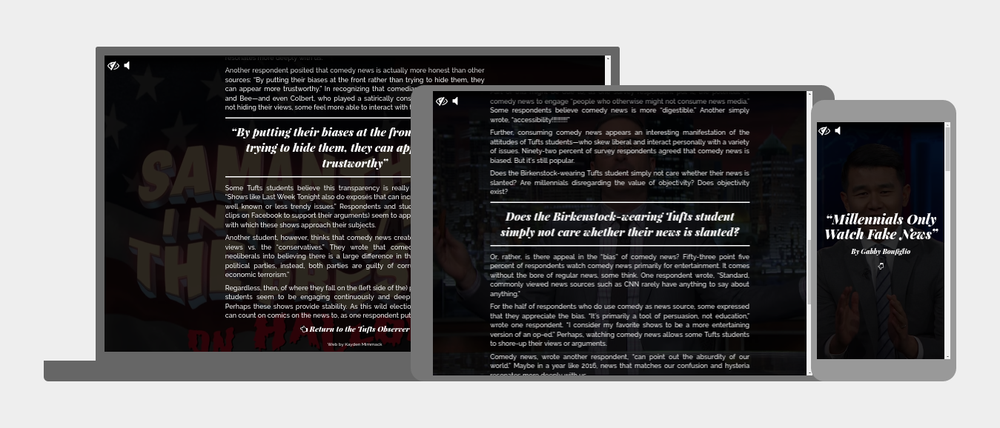
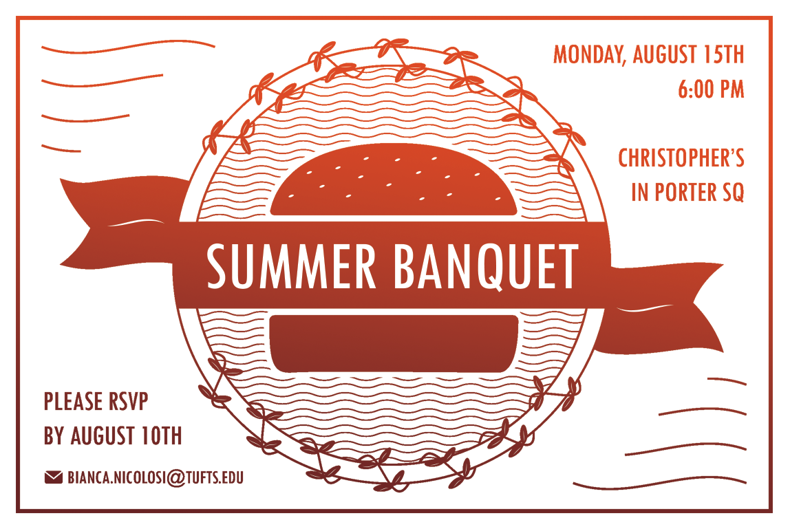
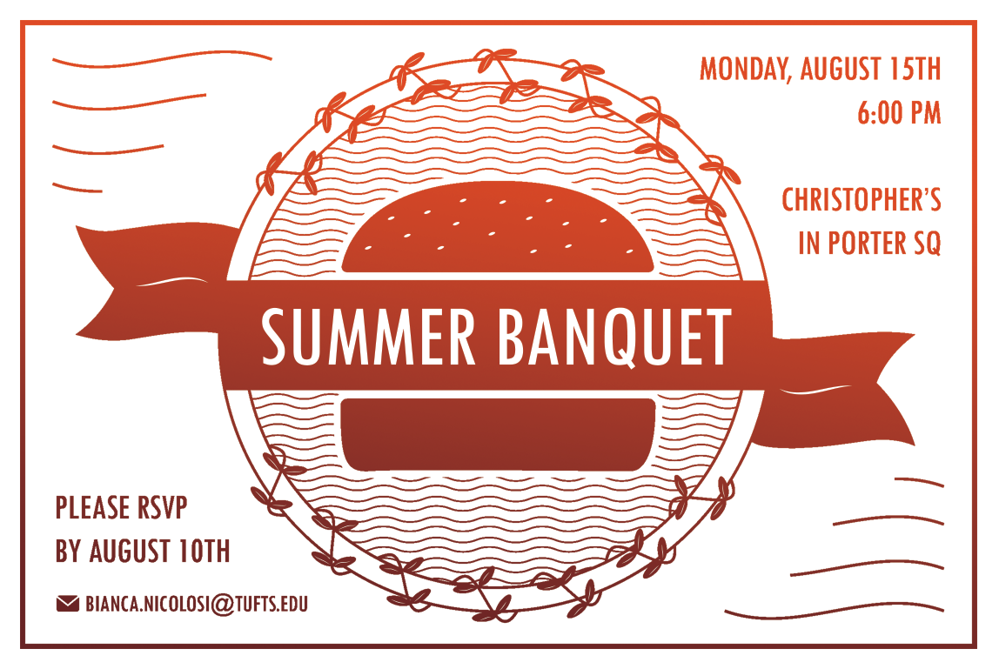

I'm a third-year at Tufts University studying Applied Math with a background in CS. I also grade Calc II homeworks and am a multimedia contributor for the Tufts Observer magazine, where I make featured articles interactive and fun to read online. My favorite things are quiet bus rides, laundromats, and funny-looking dogs.
↓
Projects
Facebook Quiz
Live · Github · Designed from scratch to imitate Facebook - user follows a choose-your-own-adventure quiz in the comments section of a controversial post

Major Sprawl
Live · Github · Maps the spread of Tufts courses by department across campus

Book Recommendations
Live · Github · Connects from Google Forms and dynamically links new recommendations to Goodreads

Comedy News
Live · Github · Plays different Youtube videos in background dependent on scroll location
Graphic Design

 

This website was inspired by Ruben Stom's personal portfolio. I also used Google Design's resizer web app for the screenshots of my projects.